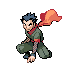
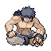

城都聯盟Johto League
需要全部 8 枚城都徽章。中途不得離開，依序面對每一位成員；落敗或離開 = 重來。
最低等級：你最強的寶可夢須為 Lv 130+（在第一位四天王處檢查）。
冠軍獎勵：16,000 金錢與城都冠軍稱號。成為冠軍後，此地區的傳說寶可夢會解鎖。
1. 一樹 · 超能力
 迷唇姐
迷唇姐 椰蛋樹
椰蛋樹 艾路雷朵
艾路雷朵 天然鳥
天然鳥 巨金怪
巨金怪 彎曲的湯匙
彎曲的湯匙
2. 阿桔 · 毒 摩魯蛾
摩魯蛾 臭臭泥
臭臭泥 毒骷蛙
毒骷蛙 龍王蠍
龍王蠍 叉字蝠
叉字蝠 毒針
毒針
3. 希巴 · 格鬥需要全部 8 枚城都徽章。中途不得離開，依序面對每一位成員；落敗或離開 = 重來。
最低等級：你最強的寶可夢須為 Lv 130+（在第一位四天王處檢查）。
冠軍獎勵：16,000 金錢與城都冠軍稱號。成為冠軍後，此地區的傳說寶可夢會解鎖。

2. 阿桔 · 毒
3. 希巴 · 格鬥 5. 阿渡 · 龍 冠軍
5. 阿渡 · 龍 冠軍 飛腿郎
飛腿郎 快拳郎
快拳郎 赫拉克羅斯
赫拉克羅斯 鐵掌力士
鐵掌力士 怪力
怪力 黑帶
黑帶 月亮伊布
月亮伊布 阿勃梭魯
阿勃梭魯 烏鴉頭頭
烏鴉頭頭 花岩怪
花岩怪 黑魯加
黑魯加 化石翼龍
化石翼龍 暴飛龍
暴飛龍 烈咬陸鯊
烈咬陸鯊 快龍
快龍